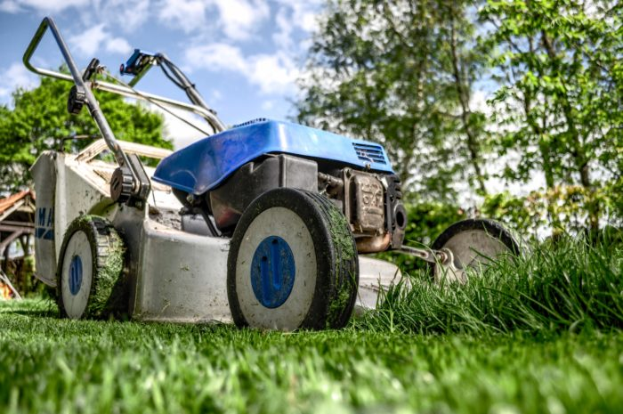
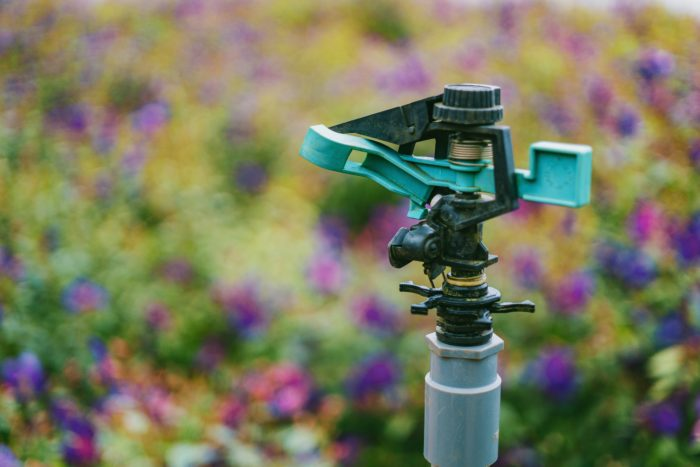
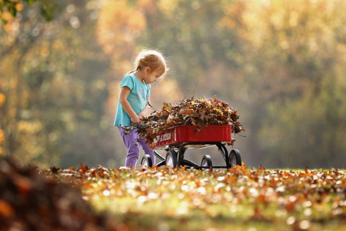

Iako su “udarni” mjeseci od ožujka do rujna, posla oko održavanja travnjaka ima tijekom cijele godine
Siječanj
U siječnju oko travnjaka nema skoro nikakve brige. Potrebno je sa njega tek povremeno ukloniti eventualno napalo granje ili lišće koje je tu nanio vjetra. Činite to za suha vremena. Gaženje po travnjaku treba izbjegavati, kako se na njemu ne bi stvorila ulegnuća u koja će se sakupljati voda.
Veljača
I u veljači je gaženje po travnjaku najbolje izbjegavati. Tek možda u područjima s blažom klimom od kraja veljače možemo započeti sa čišćenjem travnjaka od svih otpadnih materijala koji su se na njemu tijekom zime nakupili.
Ožujak
Od ožujka kreću radovi kako na podizanju novog travnjaka, tako i na održavanju postojećeg. Potrebno je u prvom redu grabljanjem sa travnjaka ukloniti sav otpadni materijal i mahovinu.
Dobro je travnjak i prozračiti, specijalnim valjcima sa šiljcima ili na manjim površinama običnim vilama. Ovom se operacijom pojačava djelovanje mikroorganizama tla, olakšano je prodiranje vode i plinova u tlo, a smanjuje se i njegova zbijenost.
Kako je mraz tijekom zime odigao korijenje biljaka od tla, valjanjem lakim valjcima ponovno ćemo postići dobar kontakt korijena sa tlom.
Krajem ožujka travnjak možemo i prvi put pokositi.
Travanj
Od početka travnja možemo započeti sa nadosijavanjem ogoljelih dijelova travnjaka. Učestalost košnji se od travnja povećava, pogotovo ako je vrijeme toplo.
Dobro je u travnju izvršiti i prvu prihranu travnjaka, ovaj puta gnojivima sa većim udjelom dušika u odnosu na fosfor i kalij.
Svibanj
Učestalost košnje u svibnju se povećava. Pri tom je nužno ukloniti otkos sa površine. U mnogim područjima, posebno u našem priobalnom dijelu potrebno je započeti s navodnjavanjem travnjaka.
Lipanj
I dalje nastavljamo sa redovitim zalijevanjem površine.
Uslijed visokih temperatura dolazi do smanjenog rasta trave, pa je potrebno smanjiti učestalost košnje. Travu treba kositi na nešto višu razinu no što je bila do tada. Pokošenu travu možemo ostaviti na travnjaku.
Dobro je ponovno provesti operaciju prozračivanja (aerifikacije) travnjaka. Korovi su sada mnogo invazivniji, pa je potrebno na vrijeme suzbiti ih kako se s vremenom ne bi previše raširili.
Srpanj
Zalijevanje, zalijevanje i košnja. Tako bi mogli označiti radove u srpnju.
I sada kosimo na nešto višu razinu no što je bila u proljeće.
Kolovoz
Osim zalijevanja i košnje, u kolovozu zadnji puta površinu prihranjujemo gnojivima sa većim udjelom dušika. I dalje odstranjujemo korove.
Rujan
Od rujna započinjemo s radovima koji bi trebali utjecati na što lakše prezimljavanje travnjaka. Još jednom provodimo prozračivanje travnjaka.
Kako su oborine učestalije, brži je i rast trava, pa je potrebno češće kositi. Razina košnje ponovno je za oko 1/3 niža no što je bila ljeti.
Listopad
Nastavljamo sa košnjom sve do konca listopada. Kako su u listopadu oborine česte, kosimo nekoliko dana nakon kiše, kako ne bi gazili po vlažnoj površini. Svu pokošenu travu obavezno uklanjamo sa travnjaka.
Travnjak prihranjujemo kompleksnim gnojivima sa većim udjelom kalija, koji će omogućiti lakše prezimljavanje trave.
Studeni
S travnjaka uklanjamo svo otpalo lišće i drugi otpadni materijal koji nanese vjetar.
Prosinac
Treba izbjegavati hodanje po travnjaku.
Mjesec je ovo u kojem na travnjacima nema nikakvih radova. Vrijeme je da se odmorite od napornih radova tijekom godine.